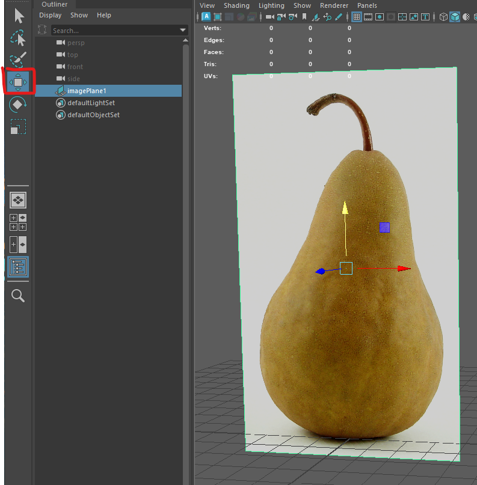
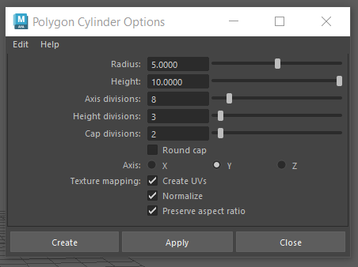
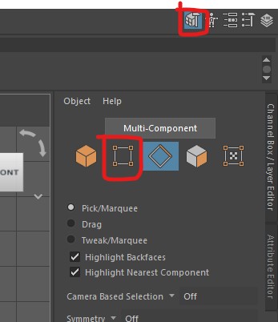
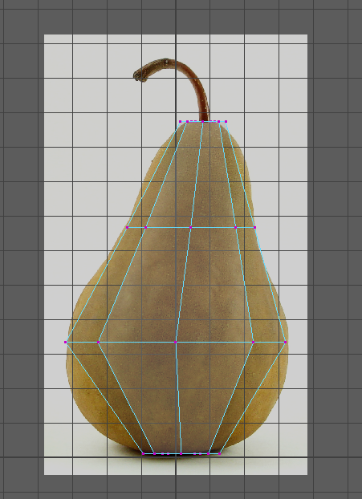
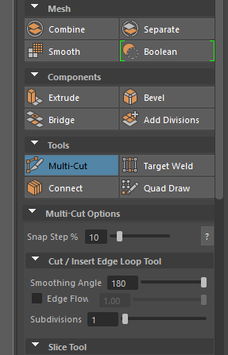

All the machines in the lab have Maya installed, if you want you use your own machine follow the installation guide.
Make sure you have a mouse.
Ask for help if you get stuck.
This is important as we are now using multiple files and need to keep them together.
This worksheet will help you to model a pear, however, using an image reference is useful for many projects and rounded organic shapes are very common in many objects.
Using an image reference is very useful as a guide to help you create a good model.
You can work from sketches for your own project, but we will work from a photo.
We will use this image of a pear.
In Maya




Create a cylinder with the following properties


You can now enter X-Ray mode so you can see through your cylinder.



Or, if you want to work more quickly you can hold down the right mouse button, then move it and let go over the vertex button.

We can now scale down the vertices to match the shape of our pear reference.


Don"t use the right hand red square, as it will only scale the shape in one dimension


We now want to check our model in perspective view to make sure it looks OK.
Press the space bar, and then hover over the perspective panel and press it again to go back into perspective view.
Check that your pear looks OK, if not you can undo by pressing ctrl + z a few times and redo the last few steps making sure you scale evenly.
We can now add extra edge loops to improve the model.


Press "q" to quit out of the tool.
Scale these new edge loops as before to improve the shape.

Your pear will look quite faceted, with hard corners, you may like this low poly look or you can soften the edges to make it appear rounder.
Pull up the top edge loop to create a depression in the top.
Do the same thing on the bottom.

As we are making an organic object, we do not want it to be too perfect.

Now that the main body of the pair is complete your challenge is to create the stalk in the same way.
You can make this a separate object or extrude the top faces upwards.
when you scale and move the vertex loops you can also rotate them if needed.
When you have finished, you can hide the reference image by selecting it and pressing "h".

Save you work.
{kind=link}